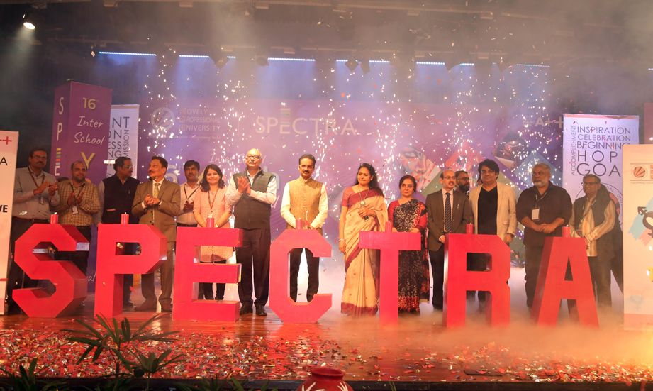
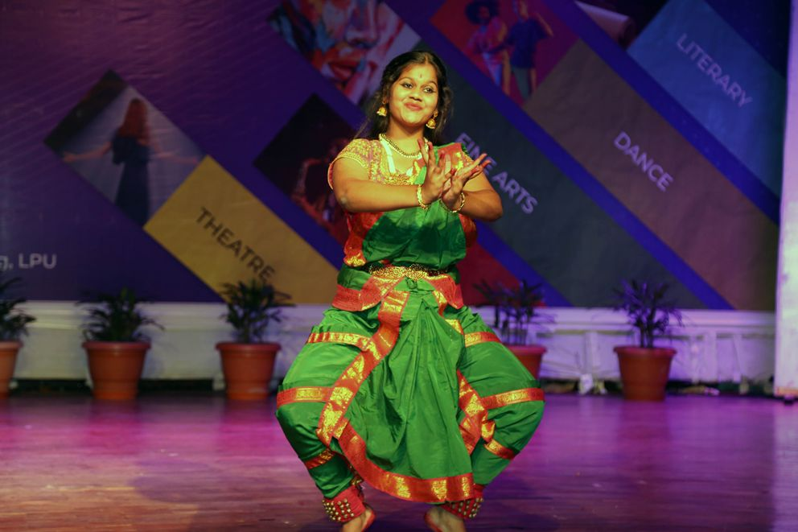
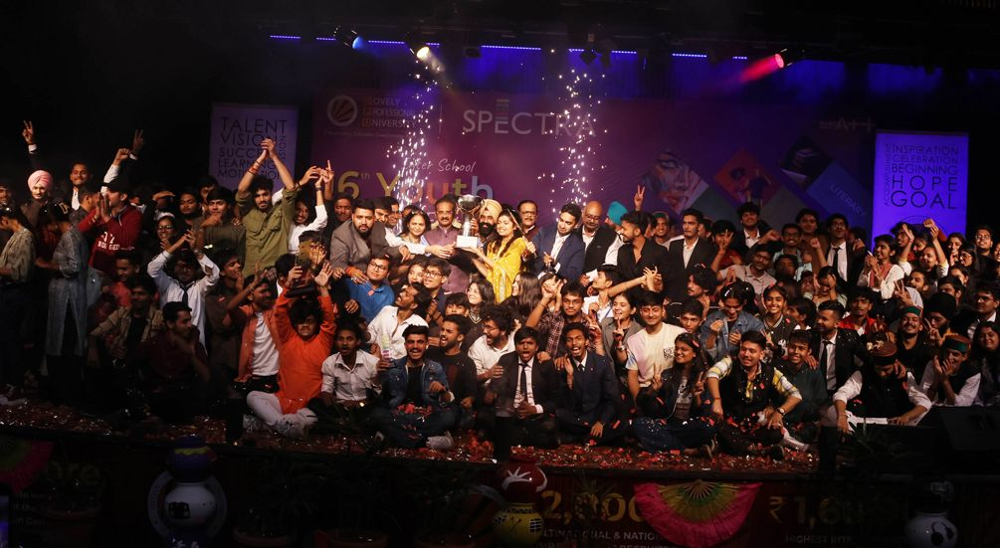
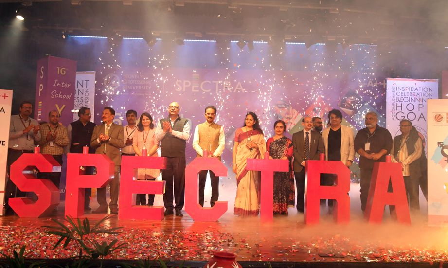
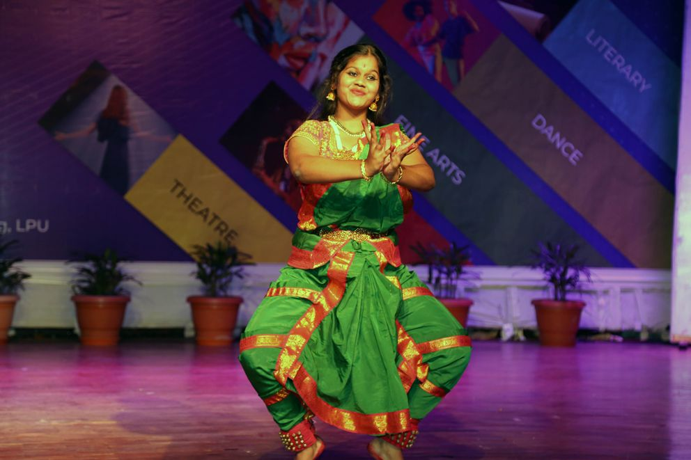
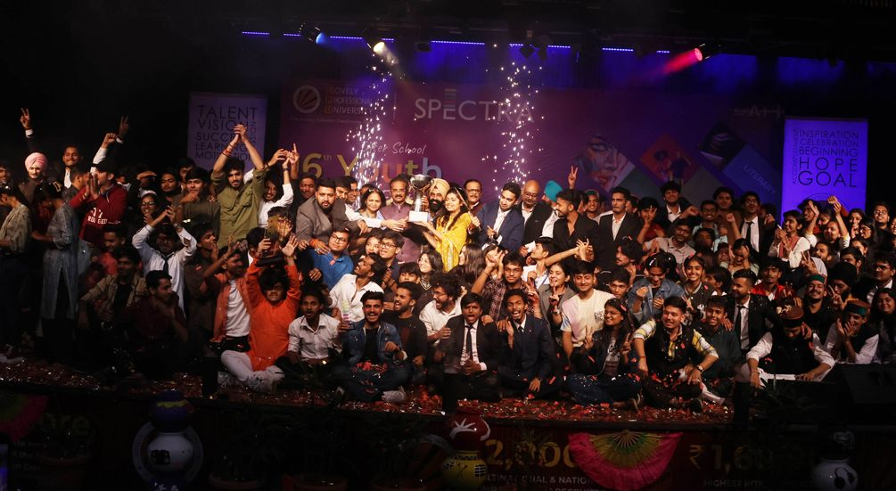
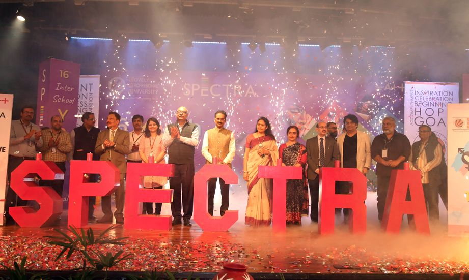
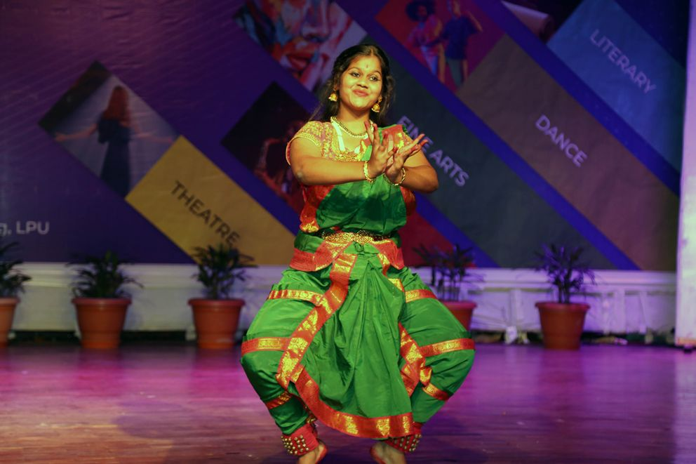
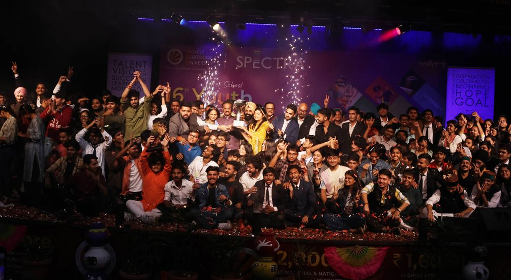
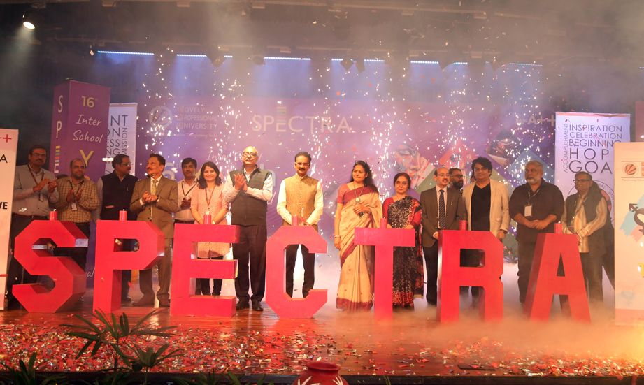
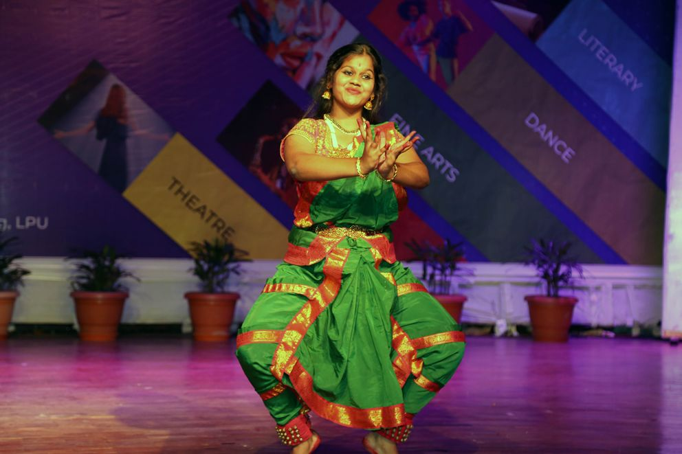
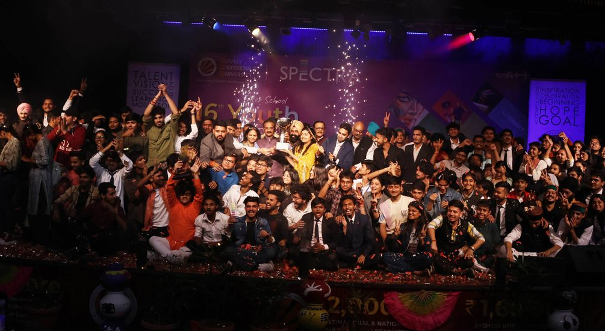
* 4000+ students participated in related competitions held in genres of Dance, Music, Literary, Fine Arts, and, Theatre & Social Media
* A long caravan comprising LPU’s each and every department also portrayed society impacting cultural heritage.
Jalandhar: The Division of Arts & Culture at the Student Welfare Wing of Lovely Professional University (LPU) organized its three-day annual 16th Inter School Youth Festival ‘Spectra 2023’. The theme celebrated this year was the promotion of “Trans-Inclusive Society”. For this, 4000+ students participated in theme related 40 competitions held in the genres of ‘Dance, Music, Literary, Fine Arts, and, Theatre & Social Media’. It was indeed an exuberant experience as LPU students of professional STEM & other programmes were seen performing superbly for cultural competitions.
On the conclusive day, LPU’s School of Computer Science and Engineering lifted the winners' trophy; the School of Architecture was declared first runner; whereas, the School of Creative Arts was judged as the 2nd Runner-Up. LPU’s Founder Chancellor & Member of Parliament Rajya Sabha Dr Ashok Kumar Mittal and Pro Chancellor Rashmi Mittal bestowed honours on the winners. Motivating students, Dr Mittal wished them to continue exhibiting the best of their inborn talents and passions for the benefit of the society, and to bring laurels to the university and the self.The event was not only to entertain LPU students but also to enlighten & enhance their competitive spirit to excel in life. Showcasing urgently needed trans-inclusive society, the event was inaugurated with a thought provoking dance-sequel with trans-representation as per its presence in the society under certain ifs & buts. Literary competitions also contained diverse topics related to their immediate needs. Through such presentations there were pleas for the individual dignity of trans-lives.
In addition, there were marvellous performances throughout the event, including a fashion show which was based on the theme of ‘Khadi for Nation; Khadi for Fashion.’ Musical execution by India's Got Talent national TV Show Runner-Up LPU’s Team- Raaga Fusion was an added lustre to the event. Other needs of the society depicted at the fest were for or against war, corruption, terrorism, green environment, cleanliness, skills development, entrepreneurship, nationality and more under varied categories. Non-competitive performances like the street play, rock band shows, street dances and more were also chalked out to attract on looking students.
LPU schedules ‘Spectra’ fest every year to identify the talent, particularly, of new students. Winners and other talented students are further guided to share bigger national and even international level platforms, including AIU Nationals, Youth Vibe, One India, One World and more.